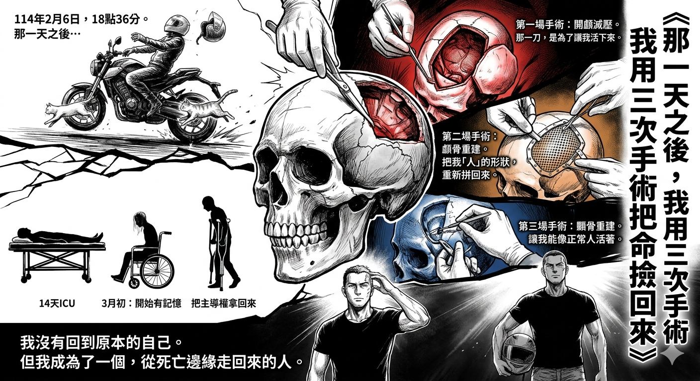
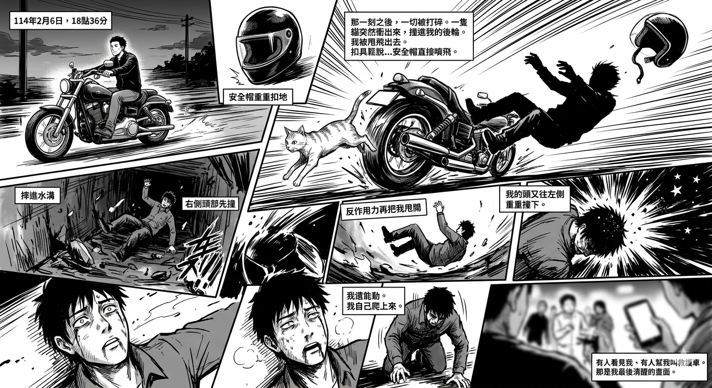
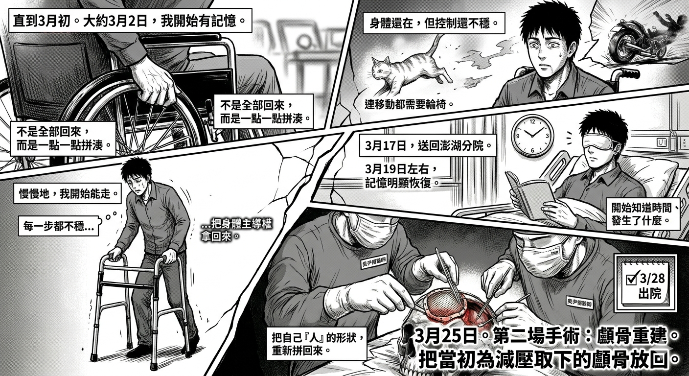
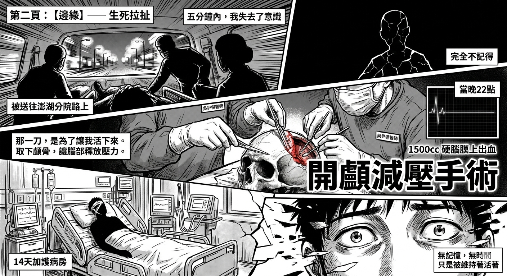

那一刻之前，我的人生沒有預警。那一刻之後，一切被打碎。
一隻貓突然衝出來，撞進我的後輪。車身瞬間失控，我被甩飛出去。
114.02.06 | 18:36

安全帽重重扣地，在劇烈摩擦之下，扣具鬆脫。我摔進水溝，右側頭部先撞。世界瞬間安靜，又混亂。

第一場手術 | 開顱減壓
硬腦膜上出血，出血量高達 1500cc。當晚 22 點，我被緊急推進手術室。
那一刀，是為了讓我活下來。
由吳尹傑醫師進行開顱減壓手術——取下顱骨，讓腦部釋放壓力。接下來是 14 天的加護病房，我只是「被維持著活著」。
114.03.02 | 記憶重組
我開始有記憶，一點一點拼湊。那時候的我，連移動都需要輪椅。身體還在，但控制還不穩。

慢慢地，我開始能走。每一步都不穩，但那代表我正在把身體的主導權拿回來。
114.03.25 | 第二場手術
進行顱骨重建，把當初為了減壓而取下的顱骨放回。
這不只是手術。
是把我「人」的形狀，重新拼回來。

3 月 28 日出院。很多人以為這是結束，但真正的難，從這裡才開始。
114.11.13 | 第三場手術

5 月 3 日回到崗位，我才明白活下來不代表恢復了。顳骨區域的結構性缺損，讓我必須再次躺上手術檯。
這一刀，是讓我能像正常人活著。
林口長庚，顳骨重建與填補手術。這一年，我經歷了三場手術：第一場救命，第二場拼回形狀，第三場修復生活。
我沒有回到原本的自己。
但我成為了一個，從死亡邊緣走回來的人。
但我成為了一個，從死亡邊緣走回來的人。